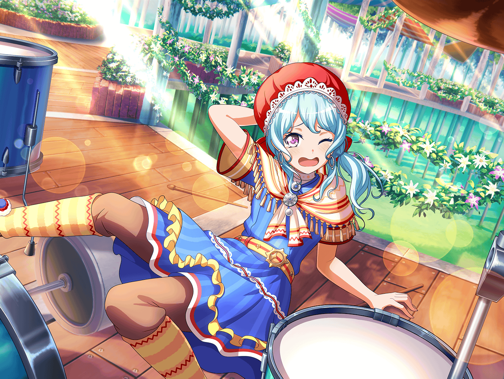

CiRCLE ロビー
花音
はぁ……みんなまだかな……
花音
あ、{{userName}}さん、こんにちは
花音
お掃除、終わったところですか？
花音
あの、私これから練習なんです
花音
でも、こころちゃんとか、みんながまだ来ていないみたいで
花音
そうだ、良かったら少しお話ししませんか？
花音
いいんですか？ ありがとうございます！
花音
何の話がいいかな……えっと
花音
え……最近あった楽しいこと、ですか
花音
何かあったかなあ……えっと……
人に話せるようなこと、なくて……
花音
お休みは大体お家にいますし……
花音
お家で食べたバナナとチョコのケーキが
おいしかったなぁ……とか？
花音
紅茶とすごくあって、甘すぎなくてすごくおいしかったんです
花音
商店街にあるお店のケーキなんですけど
花音
え……他のこと？
花音
う、うーん……あ！
花音
この前、イヴちゃんのお家でホームパーティをしたんです！
花音
香澄ちゃんとか、千聖ちゃんとか、みんなで集まって
花音
イヴちゃんの用意したメモに沿って飾りつけとかをしました
花音
みんなでわいわい一つのことをするのがなんだかすごく暖かくて
花音
文化祭とか、修学旅行みたいな……そんな感じで、楽しかったです
花音
……す、すみません。
なんだか小学生の感想みたいになってしまって
花音
でも、本当に楽しかったんですよ
花音
私、あんまり大人数って得意じゃないというか……その人見知りで
花音
学校で一緒の子も多いから、
気にする必要ないってわかってるんですけど……
花音
最初は、私のバンドのメンバーが誰もいなかったから……
ちょっと不安だったんです
花音
でも、行ってみたらみんなすごく優しくしてくれて……
花音
パーティの前にもつぐみちゃんのお店で
千聖ちゃん達とケーキを食べながらおしゃべりしたんです
花音
みんなでイヴちゃんの悩みを聞いたりして……
花音
あ、イヴちゃんの悩みですか？
花音
えっとそれは、イヴちゃんがフィンランドのお友達を
ホームパーティに呼んでいたんですけど
花音
そのお友達に、イヴちゃんがちょっと嘘をついていたんです
花音
誰かを傷つけるような嘘じゃなかったんですけど
花音
それでも嘘をつくことはブシドーに反するって、
イヴちゃん落ち込んじゃって……
花音
イヴちゃんはお友達に心配をかけないために
嘘をついちゃったみたいなんですけど
花音
その嘘が、逆にお友達が心配する
理由になっちゃったみたいで……
花音
イヴちゃん、余計気にしちゃったんですよ
花音
でも、イヴちゃんは
友達にちゃんとそのことを告白して謝ったんです
花音
ちゃんと謝って、真っ直ぐ気持ちを伝えるのって
本当にすごいことですよね
花音
それをできるイヴちゃんは、
すごくカッコイイなって思いました
花音
私も、いつか自分の思っていることをちゃんと伝えて、
それを行動に移せるようになりたい
花音
うん、がんばろう！
花音
有言実行って、大事ですよね！